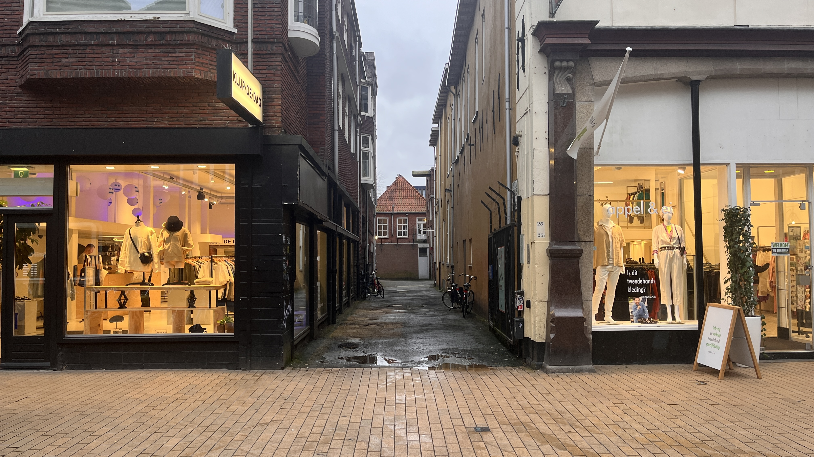

<main>
   <!-- index.html -->

<!DOCTYPE html>
<html lang="en">
<head>
<meta charset="UTF-8">
<meta name="viewport" content="width=device-width, initial-scale=1.0">
<title>Startpagina</title>
<style>
  /* Stijlen voor de startpagina */
  .title {
    cursor: pointer;
    color: blue;
    text-decoration: underline;
    margin-bottom: 10px;
  }

  /* Stijlen voor het venster (kan ook in een apart CSS-bestand worden geplaatst) */
  .container {
    display: none;
    position: fixed;
    top: 50%;
    left: 50%;
    transform: translate(-50%, -50%);
    width: 90%;
    max-width: 800px;
    background-color: white;
    border: 1px solid #ccc;
    box-shadow: 0 2px 4px rgba(0, 0, 0, 0.1);
    padding: 20px;
    z-index: 1000;
  }
</style>
</head>
<body>

<h1 class="title" id="openSlider">Voor en Na Slider</h1>
<!-- Andere titels hier -->

<div class="container" id="sliderContainer">
  <!-- Voeg de code voor de before-and-after slider hier in -->
  <div class="container">
    
    <div class="slider" id="slider"></div>
    
  </div>
</div>

<script>
  // JavaScript om het venster te tonen wanneer er op een titel wordt geklikt
  document.getElementById("openSlider").addEventListener("click", function() {
    document.getElementById("sliderContainer").style.display = "block";
  });
</script>

</body>
</html>
 <div class="container">
      <div class="image-container">
        
        <link rel="stylesheet" href="style.css">
        <script src="app.js" defer></script>
        
      </div>
      <!-- step="10" -->
      <input
        type="range"
        min="0"
        max="100"
        value="50"
        aria-label="Percentage of before photo shown"
        class="slider"
      />
      <div class="slider-line" aria-hidden="true"></div>
      <div class="slider-button" aria-hidden="true">
        <svg
          xmlns="http://www.w3.org/2000/svg"
          width="30"
          height="30"
          fill="currentColor"
          viewBox="0 0 256 256"
        >
          <rect width="1000" height="512" fill="none"></rect>
          <line
            x1="128"
            y1="40"
            x2="128"
            y2="216"
            fill="none"
            stroke="currentColor"
            stroke-linecap="round"
            stroke-linejoin="round"
            stroke-width="16"
          ></line>
          <line
            x1="96"
            y1="128"
            x2="16"
            y2="128"
            fill="none"
            stroke="currentColor"
            stroke-linecap="round"
            stroke-linejoin="round"
            stroke-width="16"
          ></line>
          <polyline
            points="48 160 16 128 48 96"
            fill="none"
            stroke="currentColor"
            stroke-linecap="round"
            stroke-linejoin="round"
            stroke-width="16"
          ></polyline>
          <line
            x1="160"
            y1="128"
            x2="240"
            y2="128"
            fill="none"
            stroke="currentColor"
            stroke-linecap="round"
            stroke-linejoin="round"
            stroke-width="16"
          ></line>
          <polyline
            points="208 96 240 128 208 160"
            fill="none"
            stroke="currentColor"
            stroke-linecap="round"
            stroke-linejoin="round"
            stroke-width="16"
          ></polyline>
        </svg>
      </div>
    </div>
</div>
  </main>